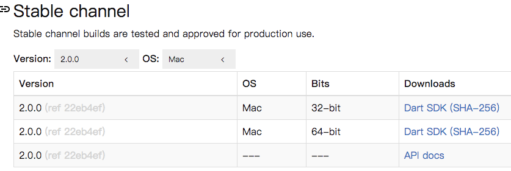
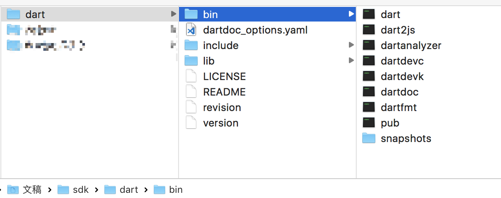
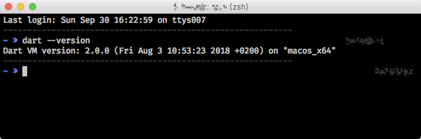

本节目标
- 配置 Dart 开发环境
- 解决墙内问题
环境
- MacOS
- Dart SDK 2.0.0
下载 SDK
SDK 列表

archive
下载 URL
1 | https://storage.googleapis.com/dart-archive/channels/stable/release/2.0.0/sdk/dartsdk-macos-x64-release.zip |
墙内请替换域名 storage.flutter-io.cn
替换后 URL
1 | https://storage.flutter-io.cn/dart-archive/channels/stable/release/2.0.0/sdk/dartsdk-macos-x64-release.zip |
解压到磁盘

磁盘位置 ~/Documents/sdk/dart-sdk
配置 VSCode IDE
下载链接
安装 Dart 插件
编写 HelloWord
新建目录
dart-learn编写文件
hello.dart
1 | void main() { |
调试运行
配置文件 launch.json
1 | { |
配置命令行模式
设置环境变量
1 | # 打开配置文件 |
测试

新开命令行窗口
1 | dart --version |
参考
© 猫哥